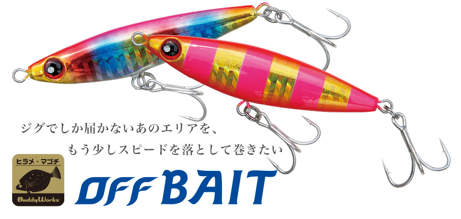
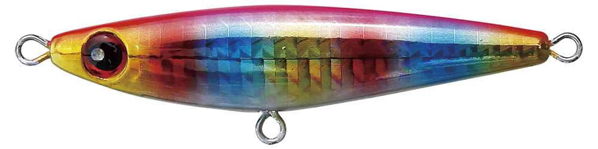
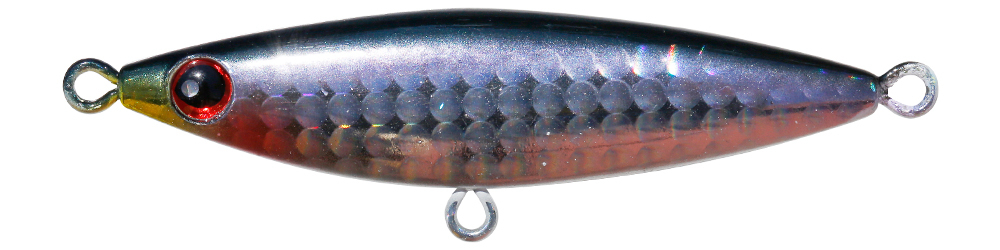
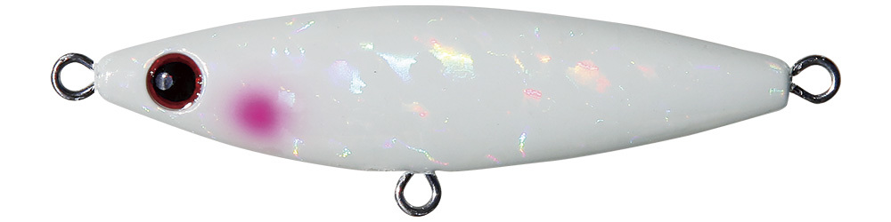
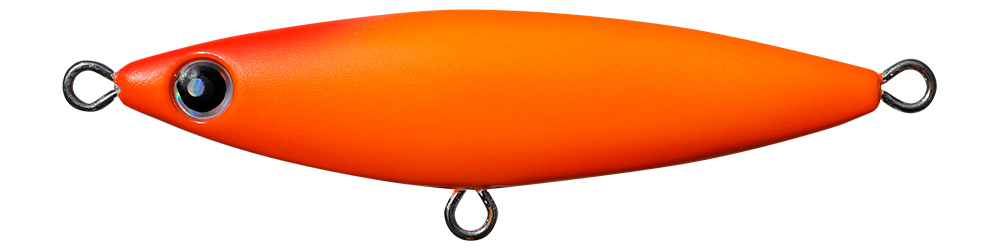
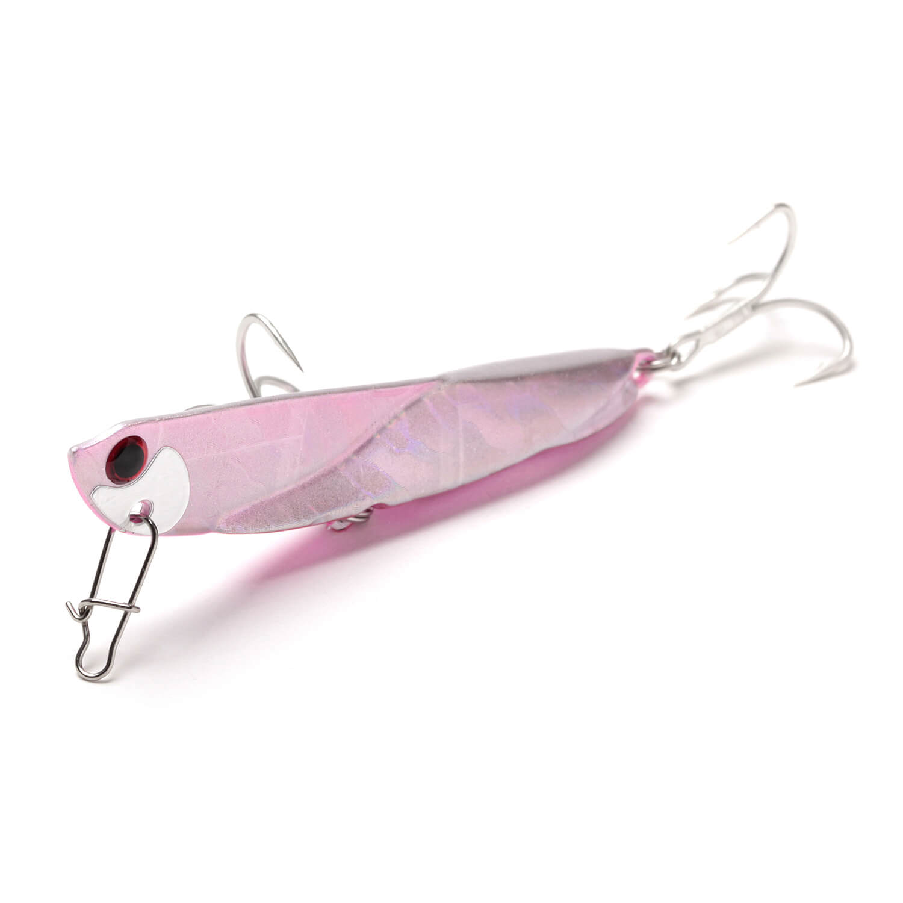

オフベイト
（OFF BAIT）
更新日：2026年11月7日
オフベイト（OFF BAIT）はBuddyWorks（バディーワークス）のヒラメ・マゴチ向けメタルジグです。
「ジグでしか届かないあのエリアを、もう少しスピードを落として巻きたい」というコンセプトで作られたセンターバランスのジグで、ミディアムスローで巻くとシンキングペンシルのようにユラユラ泳ぐのが最大の魅力です。

画像出典:BuddyWorks公式HP
スペック
- メーカー
- BuddyWorks（バディーワークス）
- タイプ
- メタルジグ（センターバランス）
- 全長
- 68mm（全サイズ共通）
- 重さ
- 20g／30g／35g／40g
- フック
- フロント #8／リア #6
- カラー
- 全21色
- ターゲット
- ヒラメ・マゴチ
- 価格
- 1,430円〜1,485円（税込・メーカー希望小売価格）
▼今すぐチェック

オフベイトの特徴
ジグの飛距離のまま、スローにユラユラ泳がせられるヒラメ用メタルジグ
-
ミディアムスローで浮き上がるセンターバランス
重心をボディの中央に置いたセンターバランスのジグ。速く巻かなくても浮き上がるので、ミディアムスローのただ巻きでレンジを保ちやすい。プラグでは届かない沖のエリアを、ジグの飛距離のままゆっくり探れる。
-
「スイッチオフ」のユラユラ油断アクション
巻くとシンキングペンシルのようなユラユラとしたアクションになる。気を抜いて泳いでいるベイトのような動きで、ヒラメが食いやすいと公式でも紹介されている。
-
どの重さでも同じ68mmのシルエット
20gから40gまで全長は68mmで共通。重さだけを変えて、シルエットを変えずに水深や風、波に合わせられる。フックはフロント#8とリア#6のトレブルを搭載している。
オフベイトの使い方
フルキャストして着底させたら、ミディアムスローのただ巻きで、ボトムから少し浮かせてユラユラ泳がせるのが基本です。
速く巻きすぎるとオフベイトの持ち味のユラユラした動きが出にくいので、ジグとしてはゆっくりめのスピードを意識しましょう。ときどき巻きを止めてフォールを入れ、もう一度底を取り直すとレンジを外しにくくなります。
オフベイトの得意な状況
遠浅のサーフで、プラグでは届かない沖のブレイクや離岸流をヒラメ・マゴチ狙いで探る場面が出番です。
ジグの飛距離で沖まで届き、そのままスローに見せられるので、速い動きに反応しない日のヒラメでも釣れるチャンスを作れます。
ベイトが小さく、シンキングペンシルを使いたいのに届かない、という状況にもぴったりです。
ワンポイント
重さは、ミディアムスローで巻いて底を擦らないぎりぎりの重さを選ぶのがコツです。波や風が弱い日は30gから始めて、波が高い日や水深のある場所では35g・40gに上げましょう。
オフベイトの重さの使い分け
| 重さ | 価格（税込） | 得意な場面 |
|---|---|---|
| 20g | 1,430円 | 波の穏やかな日や、浅いサーフ・河口をスローに探る時に |
| 30g | 1,430円 | 風や波が穏やかな日の、まず使いたい基本の重さ |
| 35g | 1,485円 | 少し波や風がある日に、レンジを保って引きたい時に |
| 40g | 1,485円 | 波が高い日や水深のある場所、もっと沖まで届かせたい時に |
全長はどの重さも68mmで、フックはフロント#8・リア#6です。カラーは重さによって展開が少し違い、30g・35g・40gが全21色です。
人気カラー
オフベイトは全21色展開。人気カラーを紹介します。

ピンキンキャンディピンクとゴールドの組み合わせで、朝マズメや濁りの入った日に強いカラー。

リアル背黒イワシなどのベイトに合わせやすい、ナチュラルな背黒カラー。

フラッシュグローグローとホロのフラッシングで、薄暗い時間帯や濁りでも目立つカラー。

マットオレンジギラつきを抑えたマットカラー。日が高い時間やスレた日に試したい1色。
画像出典:BuddyWorks公式HP
▼今すぐチェック
オフベイトに似ているルアー
-
 ビーチウォーカー フリッパー32
DUO
詳細はこちら＞
ビーチウォーカー フリッパー32
DUO
詳細はこちら＞
ブレード付きのフラット用メタルジグ。ブレードのアピールでサーフを速く広く探りたい時に。
-

飛び過ぎダニエル ジャクソン 詳細はこちら＞自重以上に飛ぶメタルジグ。ワイドなウォブリングでヒラメから青物まで狙いたい時に。
-
 ぶっ飛びスプーン
ジャンプライズ
詳細はこちら＞
ぶっ飛びスプーン
ジャンプライズ
詳細はこちら＞
スプーン形状のハイブリッドジグミノー。食わせの能力を重視して遠くを探りたい時に。